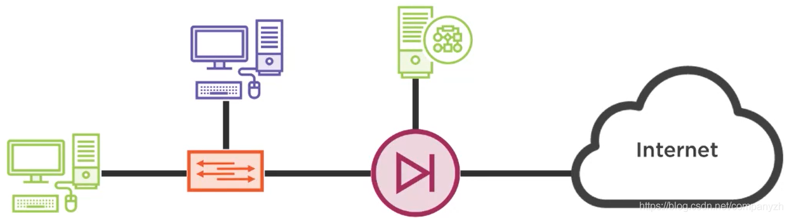
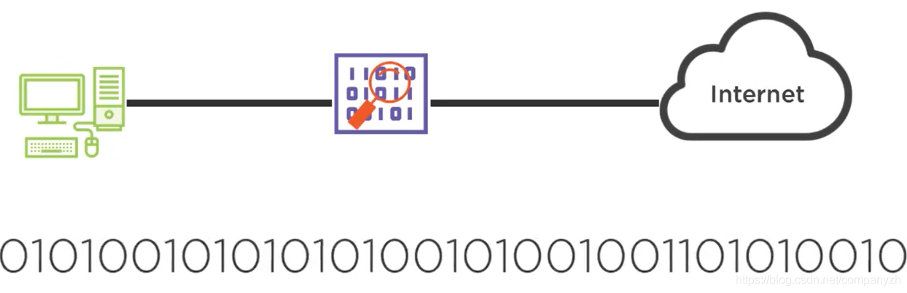
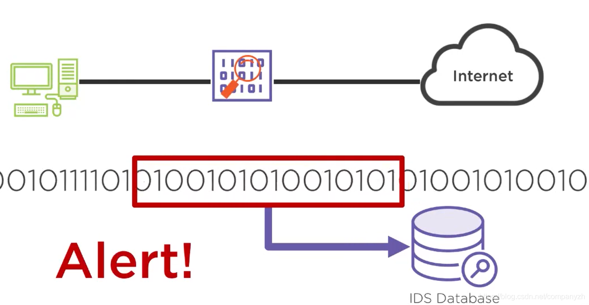

- 01 我应该站在谁的肩膀上 - OSI vs TCPIP模型.md
- 02 万丈高楼平地起- 物理层 + 数据链路层.md
- 03 OSI的灵魂就是我 - 网络层.md
- 04 要快还是要稳你说好了 - 传输层.md
- 05 是时候展现真正的技术了 - 应用层.md
- 06 重回小学课堂 - 二进制101.md
- 07 1+1 = 2吗？ - 二进制的计算.md
- 08 16进制又是个什么鬼？ - 16进制的讲解.md
- 09 我想有个家 - 什么是IP地址.md
- 10 我可是住二环的人 - IP地址的组成和分类.md
- 11 我已经没地方住了吗 - IPv6.md
- 12 向左还是向右 - IP路由.md
- 13 我能给你安全感 - TCP（一）.md
- 14 我那不为人知的秘密是什么 - TCP（二）.md
- 15 不问收没收到，就问快不快 - UDP.md
- 16 我为什么与众不同 - TCP高级篇（拥塞模型）.md
- 17 来，先看看我的家谱 - HTTP的身世.md
- 18 我都这么成功了，你却说我不行 - HTTP 的特点和缺点.md
- 19 我老了，让我儿子来吧 - HTTP2.md
- 20 稳重的大外甥 - HTTPS.md
- 21 HTTP的高级篇 - HTTPClient（Java）.md
- 22 想来我家，你自己查呀 - DNS.md
- 23 来的早，不如来得巧 - NAT.md
- 24 辛苦的邮政 - SMTP.md
- 25 你就是看不见我 - VPN.md
- 26 黑客的好帮手 - SSH.md
- 27 你可以得到我的心，却得不到我的人 - 物理安全设备.md
- 28 你怎么证明你就是你 - 身份验证和访问控制.md
- 29 我要怎么藏好我的考研资料 - 网络攻击（一）.md
- 30 我要怎么藏好我的考研资料 - 网络攻击（二）.md
- 31 如何保护我的考研资料 - 网络攻击防范.md
- 32 Linux网络安全 - 安全实战.md
- 33 结语.md
31 如何保护我的考研资料 - 网络攻击防范
Internet Edge
现在，Internet边缘已成为我们内部专用设备和Internet之间的网络中的一个位置。我们的内部专用设备通常假定内部网络中传递的数据是安全的。如果我们的其中一台设备上装有病毒或恶意软件，那可能会改变。但是在大多数情况下，我们假设内部网络中的流量与Internet上的流量相比是安全的。数据包仅需满足在互联网上传递的最低要求，这使得攻击者可以将有效载荷放置在几乎任何他们想要的数据包上，这使攻击者经常可以利用我们内部设备中的漏洞。因此，我们要防止发生的事情就是像在防火墙中那样做。防火墙是我们防御来自互联网的攻击的第一道防线。通常，防火墙所做的大部分是创建单向流量，这意味着流量可以从网络内部的设备流向Internet，然后又流回Internet，但是流量不能从Internet通过防火墙流向我们的内部设备。此外，我们的防火墙可以具有访问控制列表，并且我们可以设置VLAN来创建DMZ（是一种外围网络，可保护组织的内部局域网LAN免受不受信任的流量）。因此，也许我们创建了一个访问控制列表，说允许Internet用户访问连接到防火墙的绿色服务器，该服务器位于防火墙的DMZ中，从而允许Internet和内部网络上的用户访问该服务器。

我们还可以安装入侵检测设备或IDS入侵检测系统。通常，这些入侵检测系统是防火墙的一部分。入侵检测设备要做的就是监视通过它的所有比特流，

并将其与一组称为签名的已知恶意流量进行比较。这些签名存储在数据库中。当签名与流经IDS的流量匹配相同的模式时，你将获得一个匹配，然后IDS发出警报并说嘿，这里有危险哦。

你需要检测正在发出恶意流量的设备。此IDS中存在数据库上的那些签名不断变化，并且不断添加新的签名。因此，你需要一种方法来管理该数据库上的那些签名。通常，这种工作方式是，当你购买入侵检测系统时，会附带一个订阅服务，你必须为此支付额外的费用。你可以允许自动更新数据库的签名，以便你在网络中始终拥有最新的已知恶意流量签名集。
URL过滤器是可以帮助我们防止网络攻击的另一个功能。内部要浏览的每一个网页都要检查，并确保你没有访问那些已知为不良网站的网站。这种网站也是很多而且不断的在更新，你可以购买订阅服务的数据库，它们会向你发送定期更新的已知不良网站，这些不良网站上装有恶意软件或病毒。然后，我们可以使用该URL过滤器来确保我们的内部用户不会意外访问包含恶意流量的网站。
设备加固
设备加固，我们可以通过更改密码，设置和使用安全协议来加固设备。我们可能还想关闭IP端口号之类的东西。我们可能用于VPN之类的IP端口号在IP数据包中有一个特殊的端口号，我们可以将其关闭。此外，在我们的设备，路由器和交换机中，我们还可以关闭那些我们不使用的端口，因为如果我们有一台交换机关闭了所有当前未使用的端口，那么当有人尝试插入其中一个端口并连接设备时，至少这个访问是不被允许的。其他大部分的方法都是针对路由器和交换机的，在这里就不多做介绍了。
用户和数据
接下来我们讨论用户和数据。用户通常是对我们网络的主要威胁。我们可以拥有不称职，会犯错误并可能导致问题的用户，我们也可能拥有知识渊博的用户，或者拥有的满满恶意的用户（记住一句话，Customer is evil）。因此，我们可以采取一些措施来防止这种情况的发生，其中之一就是角色分离。如果你是你名客服，则只会授予你操作客服软件的权限。并且你将无法访问DHCP服务器，Active Directory服务器或发钱软件。如果你要进行会计工作，那么你将被授权特别的权限来访问会计软件，并且可能无法访问客服软件。因此，这种角色分离对于确保我们的网络安全至关重要。
相信你听过很多国外的电商被攻击的故事。用户名和密码也很容易受到攻击。由于HVAC系统具有易于受到攻击的管理访问权限和用户特权，并且攻击者进入并从商店中窃取了数百万个用户数据（包括信用卡信息），这仅仅是因为他们在实施HVAC软件时没有适当的角色分离。但是在角色分离中，我们确实需要管理员和特权用户。会计中将有一些用户需要对会计软件的特权访问，以便他们可以对软件进行修改，而普通会计可能不需要。此外，我们还需要整个数据网络的管理员和特权用户，他们可以进入并能够更改路由器和交换机上的内容。因此，这些都是重要的角色，但是我们必须确保分配的角色适合特定员工的任务。因此，用户将拥有与管理员和其他特权不同的特权。
接下来，我们可以讨论文件完整性监视，而文件完整性监视可以做什么，我们通过一个小算法运行它，返回一个值，然后我们可以稍后比较该值以查看文件是否被修改。我们可以使用某些软件做同样的事情，通过定期检查以确保可以从文件中计算出这些哈希值，来验证网络中的数据，服务器中以及存储区域网络中的数据是否保持一致。
渗透测试
我们可以进行的渗透测试聘请经验丰富的工程师，而该经验丰富的工程师将使用一系列实用工具对你的数据网络进行实际攻击。攻击虽然是已知的攻击，但是你将知道何时发生，并且进行攻击的熟练工程师也知道，他们无权获取任何数据，除非这是测试的一部分。
渗透测试背后的想法是查看网络中需要修补的漏洞，以使攻击者无法访问系统。渗透测试的另一个扩展是整个安全的审核。如果渗透测试通常是试图从Internet攻击网络的Internet外部用户，则安全审核将变得更加全面。从外部看，外部攻击者可以从你的网络中获得什么访问权限，还可以看到网络内部可能存在哪些漏洞可以被攻击者利用。全面的安全审核通常在组织中很少见，因为它们最终可能会导致成本高昂并且需要更多人员来实施这些技术。但是，随着网络攻击变得越来越普遍和主流，我们看到安全审核实际上正变得越来越普遍，因为组织不想冒丢失数据或网络正常运行时间的风险，因为存在潜在的网络攻击风险。Netflix实际上有一个组叫做chaos Engineering。这个组就是专门进行各种破坏来测试软件的健壮性。